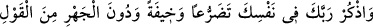
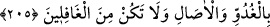
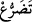

HAFÎ ZİKİR
205. Kendi kendine, yalvararak ve ürpererek, yüksek olmayan bir sesle sabah
akşam Rabbini an. Gafillerden olma.
Ey Muhammed! “Rabb’ini,” an.
Ayetteki emrin bütün mahlûkata olması da caizdir. Zikir, gafleti dağıtmak,
uzaklaştırmak demektir. Bu sebeple cennette zikir yoktur. Çünkü orası dâimî huzur
makamıdır.
“içinden” zikretmekten maksat, gizli sözle zikretmektir. Çünkü zikri gizli yapmak
ihlasa daha muvafık ve icabete daha layıktır. Bu zikir, Kur’an okumak, dua etmek gibi
bütün zikirleri içine alır. Nitekim el-Esrâru’l-Muhammediyye’de böyle denilmiştir.
Zikrin fazileti sadece tehlîl, tesbih, tekbir ve duaya mahsus değildir. Bilakis yaptığı
işte Allah’a itaat halinde olan herkes zâkirdir, zikrediyor demektir.
“yalvararak” yani yakararak ve boyun eğerek demektir. “__WORD__”, yalvarmak, boyun
eğmek ve nâz ü niyazda bulunmak demektir. Allah’a karşı tazarrû etmek de O’na boyun
eğmek ve gayet samimî bir şekilde O’na yalvarıp yakarmağa çalışmaktır. Âriflerin biri
demiştir ki: Namaz hareketlerin, oruç da sekenâtların en faziletlisidir. İbadetlerde
tazarrû ise dönen feleklerin birbirine bağlanıp dağılmadan dönmelerini sağlayan şey
yerindedir.
Bir beyitte şöyle denilir:
Eğer arzu edip istediklerimi elde etmemi dilemeseydin,
Kereminden bana istemeyi öğretmezdin,
“ve korkarak” Allah’ı korkarak anma konusunda Şeyhzâde demiştir ki: “Bu korku,
amellerdeki eksiklik korkusunu, son nefesteki belirsizlik ve önceden yazılan hükmün ne
olduğu korkusunu da içine alır. Çünkü son nefeste olacak şey, önceden karara bağlanan
hükümden başkası değildir. İşte bu sebepledir ki Rasûlullah (s.a.v.): “Kâlem, kıyamete
kadar olacak şeyleri yazdı ve kurudu.”[155] buyurmuştur.”
Fakir Bursevî derim ki: Bu mânâ, ayetteki hitap ümmete olmasına göredir.
Peygamberlere ve kemal mertebesindeki velîlere gelince onlar son nefes ve başlangıç
korkusundan emniyettedirler. Evet, onların da korkusu vardır. Fakat bu, onların
bulundukları makama uygun farklı bir korkudur. İnsanın bulunduğu hallerin en kâmili,
Allah’ın Rab olarak izzet ve şerefini, kendisinin ise kul olarak zillet ve meskenetini